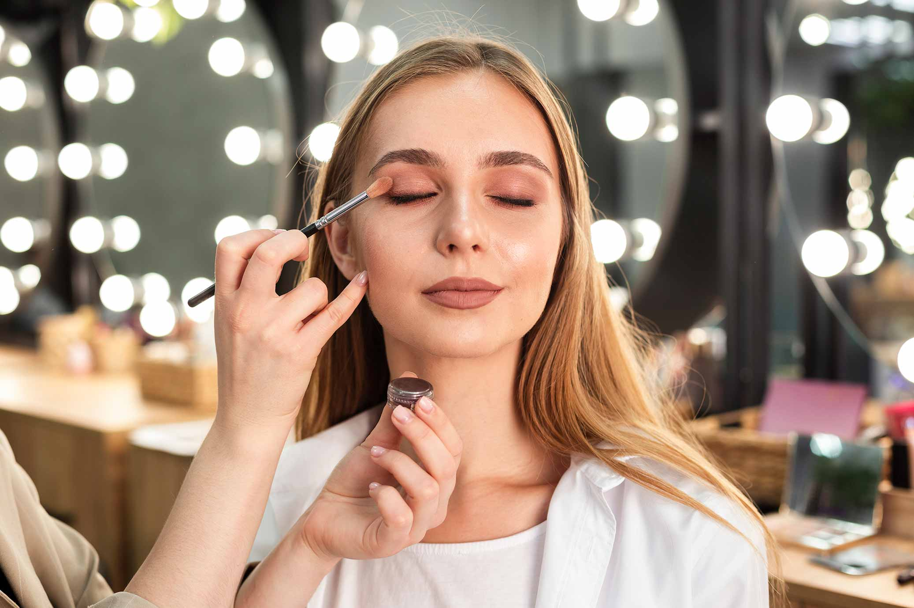

¡Hola amantes del maquillaje! 💄
El labial es una herramienta esencial para unos labios irresistibles y coloridos. Descubre cómo aplicar el labial correctamente y resaltar tu sonrisa con estilo. 💋🎨
Paso 1: Prepara tus Labios 🌈
Antes de aplicar el labial, asegúrate de que tus labios estén bien hidratados y exfoliados. Esto proporcionará una base suave y garantizará una aplicación uniforme del color. 💄
Paso 2: Usa un Perfilador de Labios Opcional ✏️
Si deseas un contorno más definido, puedes utilizar un perfilador de labios para delinear suavemente el borde de tus labios antes de aplicar el labial. Esto también evita que el color se desborde. 👄
Paso 3: Aplica el Labial con Precisión 💋
Utiliza el aplicador o un pincel de labios para aplicar el labial con precisión. Comienza en el centro del labio superior y sigue el contorno natural. Luego, continúa con el labio inferior. 🎨
Paso 4: Difumina para un Acabado Natural 🌟
Si prefieres un look más natural, puedes difuminar ligeramente el labial con los dedos para obtener un acabado suave y menos definido. Esto es perfecto para un estilo más casual. 💫
Paso 5: Capa Adicional para Intensidad 💄
Si buscas un color más intenso, puedes aplicar una segunda capa de labial. Asegúrate de dejar secar la primera capa antes de aplicar la segunda para evitar acumulaciones. 🌈
Paso 6: Elimina Excesos con un Pañuelo 🧻
Para evitar manchas en los dientes, coloca un pañuelo entre tus labios y presiona suavemente. Esto eliminará cualquier exceso de labial y asegurará una sonrisa impecable. 😁
¡Y ahí lo tienes! Ahora sabes cómo aplicar el labial para unos labios irresistibles y coloridos. ¡Que tu sonrisa brille con intensidad en cada ocasión! 💋🎨